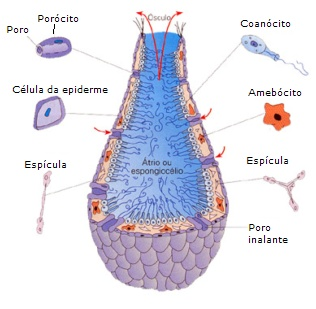
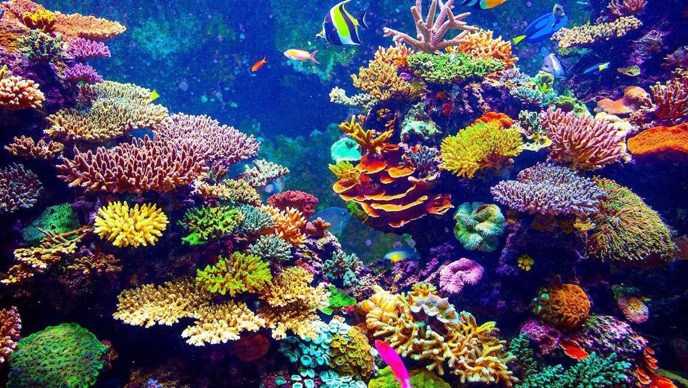
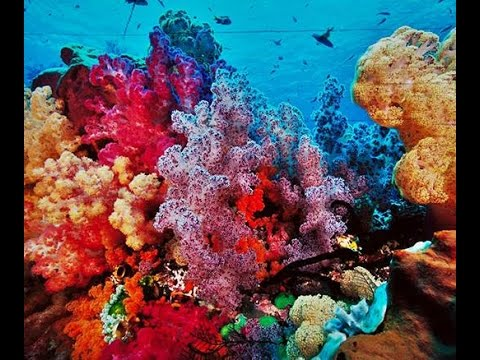

Poriferas
Los poríferos habitan siempre medios acuáticos, mayoritariamente medios marinos, aunque hay algunas especies que pueden vivir en agua dulce. Las profundidades en las que viven pueden variar entre zonas cercanas a la costa hasta profundidades de prácticamente 9000 metros. Se trata de organismos sésiles por lo que no presentan movilidad.

Todas las funciones relacionadas con la nutrición se realizan mediante el flujo de agua a través de los poros. En cuanto la alimentación, captan partículas que hay en el agua. Las partículas que son demasiado grandes para entrar en los poros son fagocitadas por los pinacocitos que las digieren internamente. Las que sí penetran por los poros son captadas por los coanocitos y suponen el 80% del alimento de las esponjas.
Existen algunas excepciones a este tipo de nutrición o alimentación, ya que hay algunas especies de esponjas que son carnívoras y se alimentan de pequeños crustáceos. En otros casos los poríferos pueden ser endosimbiontes con otros animales como algas verdes o cianobacterias de los cuales obtienen materia orgánica.
La respiración de los poríferos es por difusión directa del oxígeno disuelto en el agua. De la misma manera, el dióxido de carbono y el amoniaco generados por el animal son eliminados por difusión simple a través del agua.

Los poríferos se pueden reproducir tanto asexual como sexualmente. Para el primer caso existen tres métodos diferentes. El primero es la fragmentación, cuando un fragmento de la esponja se separa del resto del cuerpo, éste puede reconstruir las partes que faltan y convertirse en una esponja funcional. Las otras maneras de reproducirse son produciendo pequeñas yemas que se desprenden o generando gémulas bastante más complejas. Estos dos métodos están limitados a algunas especies.
En cuanto a la reproducción sexual de los poríferos, la mayoría de esponjas son hermafroditas. No disponen de gónadas y los espermatozoides normalmente están formados por los coanocitos y los óvulos por la transformación de archeocitos. Generalmente la fecundación se realiza entre distintos organismos: se expulsan los espermatozoides al agua y entran por los poros de otra esponja donde se transforman y se llevan hasta el mesohilo para encontrarse con los óvulos. La mayoría de especies retiene los huevos fertilizados hasta que nace el nuevo organismo, que lo hace en forma de larva móvil con cilios o flagelos.
son esponjas que presentan una estructura muy sencilla, en forma de tubo, normalmente forman racimos de organismos en forma tubular. Su tamaño es pequeño. Un ejemplo son las especies integrantes del género Leucosolenia.
Es un grupo más avanzado que conforma diversos grados de plegamientos del cuerpo, el atrio se presenta más reducido. El flujo del agua es mayor y el cuerpo exterioriza mayores dimensiones, por ejemplo las esponjas del género Sycon.
Son las que presentan mayor grado de plegamiento, el atrio casi ha desaparecido y disponen de un número considerable de cámaras flageladas. Es la estructura más habitual, pues está presente en la mayoría de esponjas. Sus formas pueden ser también variadas: cuerpos aplanados, tubulares, ramificantes, etc. Estas esponjas son las integrantes del grupo Demospongidae.

Dentro del filo de los poríferos se distinguen 4 clases con 3 de ellas incluyendo especies todavía vivas. La clase ya extinta se conoce como Archaeocyatha y acabó su existencia durante el Cámbrico. Las otras tres son: Calcarea, Hexactinellida y Demospongiae.
Las calcáreas son conocidas como esponjas calcáreas, se caracterizan por tener las espículas hechas de carbonato cálcico. Acostumbran a vivir a profundidades menores que las otras esponjas; por ejemplo, Clathrina coriacea, especie habitante de aguas del mediterráneo.
Los hexactinélidos son conocidos como esponjas vítreas tienen espículas de silicio y viven a mayores profundidades que las calcáreas. Ejemplo, la regadera de Filipinas (Euplectella aspergillum)
Las demosponjas también tienen espículas de silicio y forma leuconoide, pueden vivir en cualquier profundidad. Carecen de simetría radial. El género Thenea es bastante peculiar, ya que muchas de las especies integrantes mantienen una apariencia similar a una seta.vv